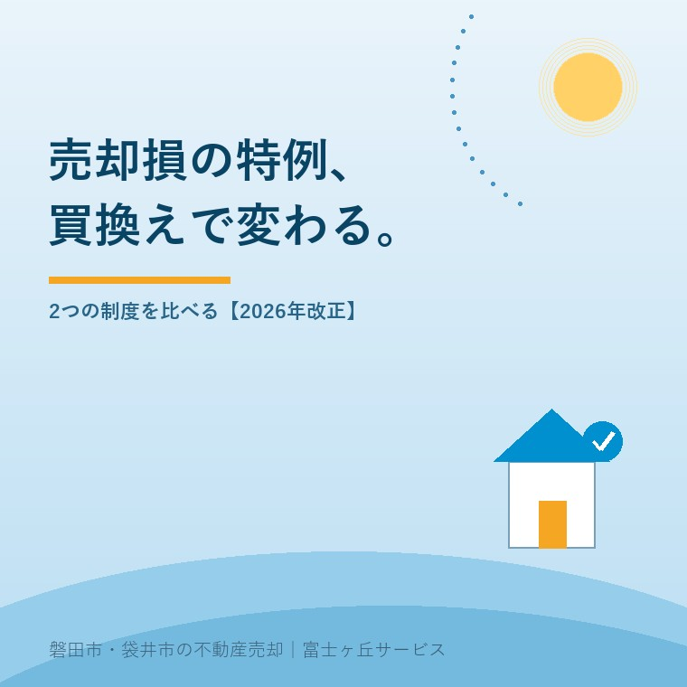

2026年9月7日｜カテゴリ：税金／住宅ローン／住み替え

この記事の要点
Q. マイホームの売却損は、買換えをするかどうかで特例が違いますか。
A. 違います。買換えありは新居と10年以上の新居ローンが軸で、旧宅のローン残高は不要です。買換えなしは旧宅の10年以上のローン残高が売価を上回ることが要件で、控除額にも上限があります。両方とも売却年の損益通算後、残額を翌年以後3年内に繰り越せます。
磐田市・袋井市・森町では、査定額、残債、売却費用、新居の借入を一枚に並べ、地域密着の不動産会社と税の専門家へ分けて相談する方法があります。
住宅ローンが残る自宅を売るとき、「赤字なら税金は関係ない」と考えがちです。ところが、マイホームの売却損には、給与や事業の所得と通算できる2つの特例があります。買換えをするかどうかで入口が変わります。
分けたいのは、税務上の譲渡損失、旧宅残高が売価を上回る残債割れ、売却費用後の手元資金です。この3つは同じ金額ではありません。
国土交通省の改正概要と成立法を2026年9月7日に確認しました。譲渡期限は2025年12月31日から2027年12月31日へ2年延長されています。国税庁の個別案内は期限表示が旧日付のため、期限は成立法、要件は同庁の案内と照合しました。
マイホームの売却損に使える2特例は、売却年に給与所得や事業所得などと損益通算し、引ききれない損失を翌年以後3年内に繰り越す仕組みです。
土地や建物の譲渡損失は、原則として給与所得などから差し引けません。自宅の一定要件を満たす場合だけ通算できます。税金が一律に戻る制度ではありません。
買換えありの正式な案内名は「マイホームを買い換えた場合の譲渡損失の損益通算及び繰越控除の特例」です。買換えなしは「特定のマイホームの譲渡損失の損益通算及び繰越控除の特例」です。
| 2026年に売却した場合 | 扱い | 売主がすること |
|---|---|---|
| 2026年分 | 譲渡損失をほかの所得と損益通算 | 所定の計算書と書類を添えて確定申告 |
| 2027～2029年分 | 残った損失を最大3年間繰越控除 | 控除額がなくなる年まで連続して確定申告 |
意外なのは、「3年間繰越」が売却年を含む3年ではないことです。2026年の損益通算に続き、2027年、2028年、2029年が繰越控除の対象期間になります。
買換えありと買換えなしの最大の違いは、買換えありでは新居ローン、買換えなしでは売った旧宅のローン残高を確認することです。
| 確認項目 | 買換えあり | 買換えなし |
|---|---|---|
| 新居の取得 | 必要 | 不要 |
| 10年以上の住宅ローン | 新居に必要 | 旧宅に必要 |
| 旧宅のローン残高 | 不要 | 売価を上回る残高が必要 |
| 通算できる損失 | 一定の譲渡損失 | 譲渡損失と「旧宅残高－売価」の少ない額が上限 |
| 新居の床面積 | 50平方メートル以上 | 新居要件なし |
共通の入口は、売った年の1月1日時点で旧宅の所有期間が5年を超えることです。丸5年とは一致しません。譲渡所得の5年を1月1日で判定する理由も確認してください。国内の主たる自宅で、親子や夫婦など特別な関係の相手への売却でないことも共通します。
買換えありの特例は、旧宅の譲渡損失に加え、国内で床面積50平方メートル以上の新居を期限内に取得し、10年以上の新居ローンを組むことが軸です。
取得期間は売却年の前年1月1日から翌年12月31日までです。2026年売却なら2025年1月1日～2027年12月31日。取得翌年末までの入居予定も確認します。
取得年末に償還期間10年以上の新居ローンが必要です。旧宅残高は要件ではありません。残債割れが必要だと一括りにすると、入口を取り違えます。
2026年改正では、新築未使用の買換資産を2028年1月1日以後に居住用にする場合、一定の災害危険区域などにある家屋を対象外とする見直しも入りました。新居の所在地と入居予定日を契約前に確認します。
新居取得の期限に合わせて旧宅を安く売ると、税の効果より値下げのほうが大きくなる場合があります。住み替えを売り先行・買い先行で比べた記事で、仮住まい、二重ローン、売却期限も並べています。
買換えなしの特例は、売買契約日の前日に旧宅の10年以上の住宅ローン残高があり、その残高を売価が下回ることが入口です。
通算できる金額には上限があります。税務上の譲渡損失と、「売買契約日前日の旧宅ローン残高－売価」を比べ、少ないほうです。
| 仮定する数字 | 金額 |
|---|---|
| 税務上の譲渡損失 | 900万円 |
| 契約日前日の旧宅ローン残高 | 2,500万円 |
| 売価 | 2,200万円 |
| 旧宅残高－売価 | 300万円 |
| この仮定での通算限度額 | 300万円 |
この仮定では、譲渡損失900万円の全額ではなく300万円が上限です。仲介手数料や抵当権抹消費用を払う現金は、別に資金表へ置きます。
残債がある家も、金融機関への完済と抵当権抹消を決済日に組めれば売却できます。ただし、売価で足りない分の準備が必要です。ローンが残る実家の抵当権と残債で、売買決済までの順番を説明しています。
良い点は、新居を買う方と、すぐには買わない方の両方に入口があることです。売却年で使い切れない損失も、翌年以後3年へつなぐ余地があります。
住宅借入金等特別控除は、各要件を満たせば併用できます。一方、3,000万円特別控除などには利用時期による適用除外があります。過去3年分の申告確認が要ります。
その上で注文があります。似た制度名だけで覚えず、旧宅ローン、新居ローン、売価、取得日を別々に見る説明が必要です。
大石浩之（磐田市／不動産業）として、私はこう考えます。特例が使えるかより先に、売却後の残債と次の返済を一枚で比べる。税だけで買換えを決めるのは順番が逆です。控除で減る税額より、急いだ値下げや無理な新居ローンのほうが家計へ長く残ることがあります。
私は、査定の場で税の話をどこまで先に出すか迷います。知らなければ選択肢を失いますが、不動産会社が個別の適用可否まで断定すべきではありません。だから、査定では税理士へ渡せる数字をそろえ、税額の判断は分けます。
磐田市・袋井市・森町で自宅を売る前に一枚へ並べたいのは、取得日、取得費、売価、売却費用、旧宅残高、新居の資金計画という6つの数字です。
売価ではなく最終手取りで考える記事の表に、旧宅残高と新居ローンの2行を足すと比較しやすくなります。合計所得金額3,000万円の判定と過去の特例利用は、申告書で別に確認します。
富士ヶ丘サービスでは、磐田・袋井の査定、道路、境界、残置物を確認し、介護や相続が絡む住み替えも同じ入口で整理します。税務判断を抱え込まず、売却価格と資金表を税理士へつなぎます。
今日、買換えるかどうかを決める必要はありません。まず住宅ローンの返済予定表と旧宅の売買契約書を一つの封筒へ入れる。2つの特例のどちらを検討するか、その材料が増えます。
いいえ。買換えありの特例では、売却した旧宅のローン残高は要件ではありません。国内で床面積50平方メートル以上の新居を取得し、取得年末に償還期間10年以上の新居ローンがあることなどを確認します。取得時期と入居期限もあるため、契約前に税理士または税務署へ確認してください。
3,000万円の所得要件は繰越控除を受ける年にかかり、売却年の損益通算には所得上限がありません。合計所得金額が3,000万円を超えた年は、その年だけ繰越控除を受けられません。残額を翌年以後へつなぐには連続した確定申告が必要なので、申告方法は税理士または税務署へ確認してください。
それぞれの要件を満たせば、住宅借入金等特別控除との併用は可能です。一方、マイホーム売却の3,000万円特別控除や軽減税率、譲渡益の買換え特例には利用時期による適用除外があります。過去3年分の申告と売買相手の関係を含め、税理士または税務署へ確認してください。

この記事を書いた人：大石浩之（宅地建物取引士）
磐田市で不動産業と介護事業を営み、住宅ローンが残る自宅や実家の売却について、査定、残債、住み替えの段取りを整理します。税の個別判断は専門家へつなぎ、売主とご家族が困らない資金計画を一件ずつ考えます。プロフィール
ふじがおか実家カルテ｜固定資産税通知書だけでも相談可
売価、残債、売却費用を一枚へ。
名義、道路、境界、残置物と資金の出口を確認し、税理士へ渡せる売却資料を整理します。税務・登記・相続の個別判断は各専門家へつなぎます。
本記事は2026年9月7日時点の公表資料に基づく一般的な説明です。譲渡損失、損益通算、繰越控除、住宅ローン、所得要件、取得・居住期限、ほかの特例との併用は個別事情で変わります。税務・登記・相続・契約の個別判断は、税理士、司法書士、弁護士、所轄の税務署などの専門家に確認してください。
富士ヶ丘サービス株式会社／静岡県磐田市見付5789番地1／TEL:0538-31-3308／静岡県知事 (2) 第14083号／代表取締役・宅地建物取引士 大石 浩之